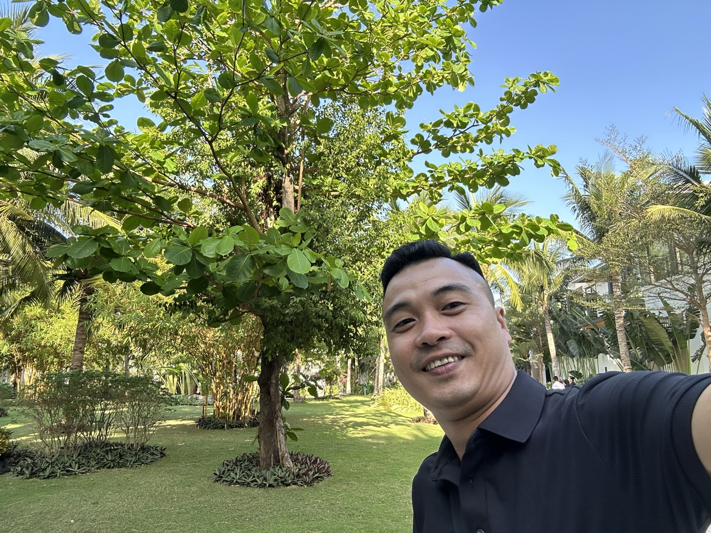

Mua căn hộ cho thuê ở Nha Trang: 5 câu hỏi trước khi xuống tiền
"Mua căn hộ biển cho thuê, ngồi không cũng có tiền" — câu này anh/chị nghe quen không? Nó là lời chào bán phổ biến nhất ở mọi thành phố du lịch, và Nha Trang không ngoại lệ.

Tôi tư vấn dòng sản phẩm này hằng ngày, và nói thật: căn hộ dòng tiền là "máy in tiền" với người hỏi đúng câu hỏi — và là "máy giữ hộ tiền" với người chỉ nghe lời chào. Dưới đây là 5 câu tôi luôn bắt khách của mình trả lời được trước khi ký bất cứ thứ gì.
Câu 1: Ai sẽ thuê căn này — và thuê bao nhiêu đêm mỗi năm?
Dòng tiền không đến từ căn hộ. Nó đến từ người thuê. Vậy người đó là ai: khách du lịch ngắn ngày, chuyên gia nước ngoài thuê dài hạn, hay gia đình địa phương?
Nền chung của Nha Trang đang thuận: chỉ nửa đầu 2026, Khánh Hòa đã đón hơn 4,6 triệu lượt khách quốc tế — đạt 73% chỉ tiêu cả năm. Khách đến thật là nền của giá thuê thật. Nhưng "nền chung tốt" không có nghĩa căn nào cũng cho thuê được: vị trí cách biển bao xa, tòa nhà có đơn vị vận hành không, xung quanh nguồn cung đang nhiều hay ít — mỗi thứ đều quyết định số đêm có khách của chính căn anh/chị mua.

Câu 2: Tỷ suất "thật" còn lại bao nhiêu — sau khi trừ hết?
Con số trong tờ quảng cáo thường là doanh thu kỳ vọng khi kín phòng. Con số về túi anh/chị là chuyện khác: phải trừ phí quản lý vận hành, những đêm trống phòng, chi phí bảo trì – thay đồ đạc, hoa hồng nền tảng đặt phòng, và thuế cho thuê.
Tôi không có con số đẹp chung cho mọi căn — vì mỗi căn mỗi khác, và ai nói với anh/chị một con số chung cho tất cả thì nên cẩn thận. Nguyên tắc của tôi đơn giản: bắt người bán tách rõ "doanh thu kỳ vọng" và "dòng tiền ròng" — chênh nhau bao nhiêu, vì sao. Riêng khoản thuế, quy định hiện hành cho cá nhân cho thuê được giảm trừ doanh thu tới 500 triệu đồng/năm — mức cụ thể nên kiểm tra với chi cục thuế theo trường hợp của mình.
Câu 3: Cam kết thuê — ai trả, trả bằng gì, và hết cam kết thì sao?
Một số dự án có cam kết thuê bằng văn bản trong vài năm đầu; nhiều dự án không có. Bản thân cam kết không xấu — nó là công cụ. Nhưng anh/chị phải hỏi ba ý: tiền cam kết đó ai trả và lấy từ nguồn nào; nó được ghi ở đâu trong hợp đồng, vi phạm thì chế tài gì; và quan trọng nhất — hết thời gian cam kết, căn hộ tự đứng được bằng khách thuê thật không?
Cam kết tốt là cây cầu dẫn vào giai đoạn khai thác thật. Cam kết xấu là tấm màn che một vị trí không ai muốn thuê.
Phân biệt hai loại này là việc tôi làm giúp khách nhiều nhất ở dòng sản phẩm này — sắp tới tôi sẽ viết riêng một bài mổ xẻ chuyện cam kết thuê.
Câu 4: Chủ đầu tư đã từng bàn giao đúng hẹn chưa?
Căn hộ hình thành tương lai nghĩa là anh/chị trả tiền hôm nay cho lời hứa vài năm sau. Thị trường từng có dự án chậm bàn giao nhiều năm liền — người mua ôm cả lãi vay lẫn tiền thuê nhà trong lúc chờ.
Việc cần làm trước khi ký: xem lịch sử bàn giao các dự án trước của chính chủ đầu tư đó, đọc kỹ điều khoản phạt chậm bàn giao trong hợp đồng, và soát pháp lý dự án theo đúng quy trình — tôi đã viết chi tiết trong bài 5 lớp kiểm tra quy hoạch trước khi xuống tiền.
Câu 5: Nếu vay — bài toán có sống nổi với lãi thả nổi không?
Câu này tôi đặt cuối nhưng nó loại nhiều thương vụ nhất. Như tôi đã phân tích trong bài thị trường giữa 2026: lãi vay sau ưu đãi đang thả nổi quanh 12–14%/năm. Dòng tiền cho thuê mà không gánh nổi lãi vay thì "căn hộ dòng tiền" thành "căn hộ dòng lo".
Phép thử của tôi: lấy dòng tiền ròng ở kịch bản xấu (trống phòng nhiều) trừ tiền lãi ở mức thả nổi — còn dương, và anh/chị vẫn ăn ngon ngủ yên, thì mới bàn tiếp. Đó cũng là chuẩn tôi tự áp cho mình sau lần vấp ngã của chính tôi.
5 câu hỏi — và một người cùng trả lời

Anh/chị để ý sẽ thấy: cả 5 câu đều không hỏi "dự án này đẹp không". Đẹp thì mắt ai cũng thấy. Đáng mua hay không nằm ở phần không in trong tờ rơi.
Nghề của tôi là giúp khách trả lời 5 câu này bằng số thật của từng dự án cụ thể — kể cả khi câu trả lời là "không nên mua".
Bài viết là góc nhìn tư vấn tổng quát, không phải khuyến nghị cho một dự án cụ thể; số liệu thị trường tổng hợp từ nguồn công khai đến 01/08/2026.
Sống tử tế · Kiếm tiền hạnh phúc · Cho đi giá trị
Anh/chị đang xem một căn hộ dòng tiền tại Nha Trang – Khánh Hòa?
Gửi tôi tên dự án — tôi giúp anh/chị trả lời đủ 5 câu hỏi trên bằng số thật, nói cả điều bất lợi. Miễn phí, không ràng buộc.
Nhắn Zalo — 0869 668 638